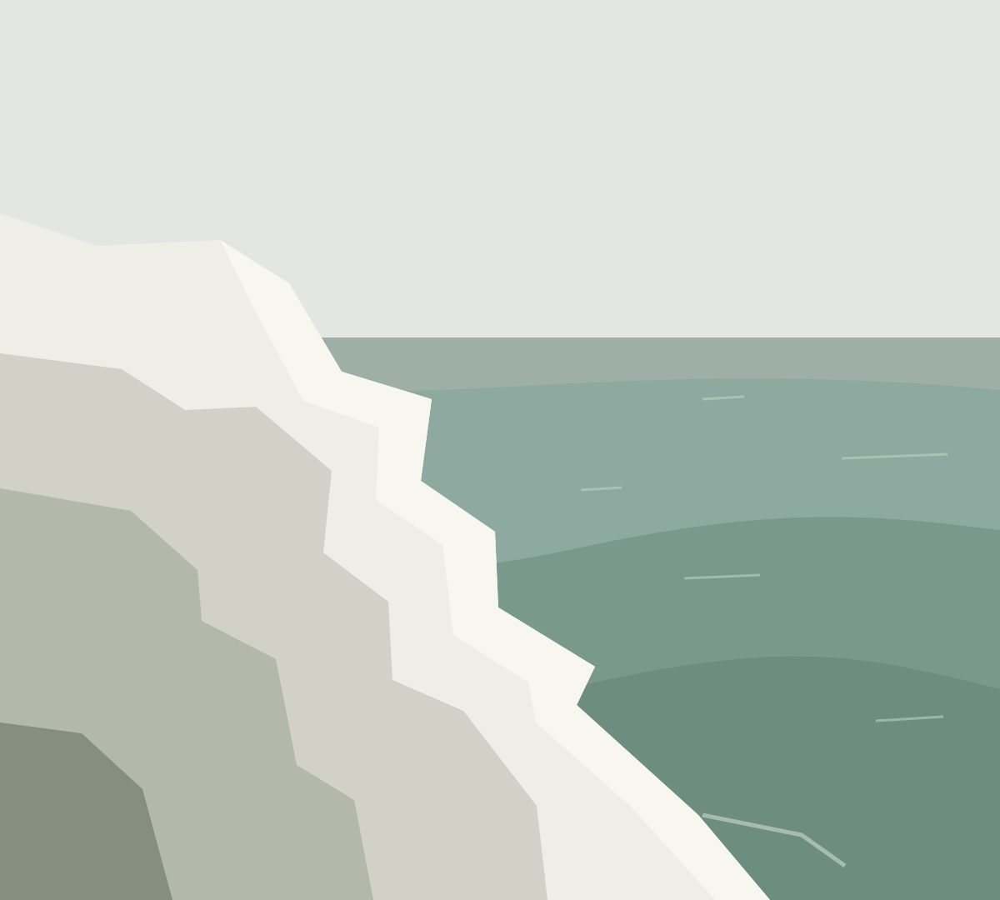
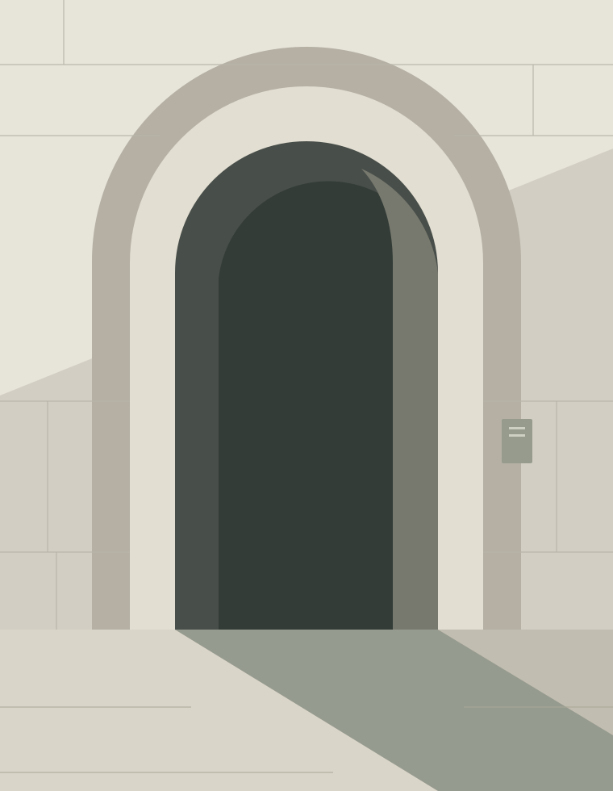
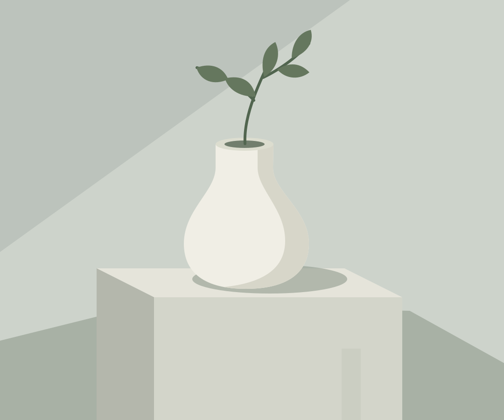

Look closer.
Portraits, places & still life
Places, objects, and the space in between. A collection of small observations.
Selected work

Where the land ends
Coast, horizon, and a little room to breathe.

An ordinary afternoon
Finding stillness in the shapes of a city.

Things left in the light
Simple objects. Changing light. Another way of looking.
About Still Studio
A slower way of seeing.
This is a space for your perspective. Introduce yourself, the subjects you return to, and what you hope people notice in your work.
Let's make something togetherDemo collection: original illustrations shown as sample images. Replace them with your own photography.
Have something in mind?
Tell me about the place, the people, or the idea you would like to photograph.